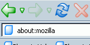
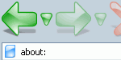
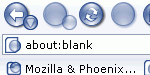
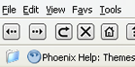
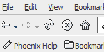

I banned the use of tables in my works when I first switched to CSS based layouts. But I was still missing the point of tables, tables are a way to markup tabular data. Once I got that point in my head, I started to think of things that really were tabular data such as the next example of Mozilla Firebird themes. Each row is a record of a theme and the columns are the fields for each theme.
| Name | Picture | Author | Version | Update | Description |
|---|---|---|---|---|---|
| Phoenity |  | Lim Chee Aun | 0.8 | 2003 06 16 | A simple and colourful theme for everyone. Natively built to be complete and robust with a minimalist concept and small, colorful icons. |
| Phoenity Aqua |  | Lim Chee Aun | 0.2 | 2003 01 18 | Phoenity adapted from the Aqua look. Phoenity icons with a sleek crystal/glass look that has the Aqua feel in it. |
| Phoenity Neo |  | Lim Chee Aun | 0.1 | 2003 01 18 | A whole new Phoenity look from the best perspective. Blue glass-look buttons with silver gradient-effect background. |
| Rhapsodized |  | Ken S. Lynch, Adam Brubaker | 0.5 | 2003 03 11 | Available with large and small icons - special thanks to Max Rudberg for his icons. |
| Breeze |  | flyson | 0.6 | 2003 05 04 | Breeze is a simple Mozilla theme. |
Even though the table makes the most sense for the data, I do not want it to display in the browser as a table. Well it is a quite a simple fix because a table is nothing more than markup that is styled using the default stylesheet rules the browsers come with (this can be seen by using the DOM Inspector in Mozilla).
table{ display: table;} thead{ display: table-header-group;} tbody{ display: table-row-group;} tr{ display: table-row;} td{ display: table-cell;}
Simple by overriding the style of the markup of the table, it can be styled as the following example shows.
| Name | Picture | Author | Version | Update | Description |
|---|---|---|---|---|---|
| Phoenity | Lim Chee Aun | 0.8 | 2003 06 16 | A simple and colourful theme for everyone. Natively built to be complete and robust with a minimalist concept and small, colorful icons. | |
| Phoenity Aqua | Lim Chee Aun | 0.2 | 2003 01 18 | Phoenity adapted from the Aqua look. Phoenity icons with a sleek crystal/glass look that has the Aqua feel in it. | |
| Phoenity Neo | Lim Chee Aun | 0.1 | 2003 01 18 | A whole new Phoenity look from the best perspective. Blue glass-look buttons with silver gradient-effect background. | |
| Rhapsodized | Ken S. Lynch, Adam Brubaker | 0.5 | 2003 03 11 | Available with large and small icons - special thanks to Max Rudberg for his icons. | |
| Breeze | flyson | 0.6 | 2003 05 04 | Breeze is a simple Mozilla theme. |
table, tbody, /* You must override tbody even if you do not place it in your markup.*/ tr, td{ display: block;} thead{ display: none;}
The full CSS of the following example.
It works in Mozilla 1.4+ and Opera 7.0. It does not work in Windows Internet Explorer 6.
I have created another example of the table reformatted.
All the theme information and pictures come from the Themes section of Mozilla Firebird Help.
Return to CSS Play.
© 2003 Seamus P. H. Leahy
You may take and improve upon this.